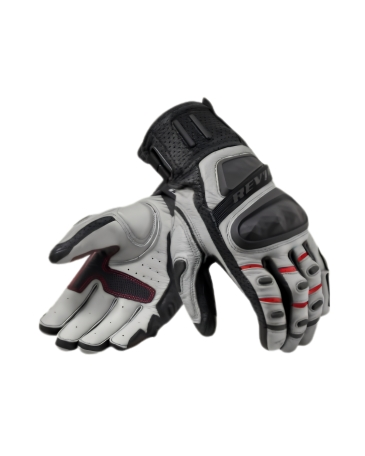

The REV'IT! Cayenne 2 is a premium adventure motorcycle gloves designed for optimal protection and comfort during on- and off-road riding in high temperatures.
They come fully equipped with CE-level 2 impact armor at the fingers, knuckles, and palms, alongside integrated adventure features
like a detachable kidney belt and a hydration bladder pocket.
| Specification | Details |
|---|---|
| Intended Use | Adventure riding (On and Off-road) in high temperatures |
| Outer Shell Material | Schoeller®-dynatec® mesh, Parkskin, PWR|Shell stretch, and PWR|Shell ripstop |
| Ventilation | Fully ventilated mesh panels prominently located at the front, back, and underarms |
| Impact Protection | SEEFLEX™ CE-level 2 Shoulder and Elbow Protectors, SEESOFT™ AIR CE-level 2 Back Protector |
| Upgrade Preparedness | Pockets/loops for SEESOFT™ CE-level 1 Divided Chest Protector, Segur neck brace, and NEON vest connector |
| Adjustability | Flexisnap collar; height-adjustable elbow protection; adjustment straps at the waist, upper arms, and lower arms; UTA tab at cuffs |
| Visibility | Laminated reflection panels welded onto the chest, upper arms, and back |
| Storage / Pockets | Two front stash pockets, two inner pockets, a sleeve pocket, an XL rear storage pocket, and a hydration bladder pocket |
| Special Features | Detachable kidney belt with a secret pocket, stretch panels at the elbows, soft edge collar, and long/short connection zippers |
| Safety Certification | CE certified to the EN 17092 Standard (2020), achieving an AA rating |